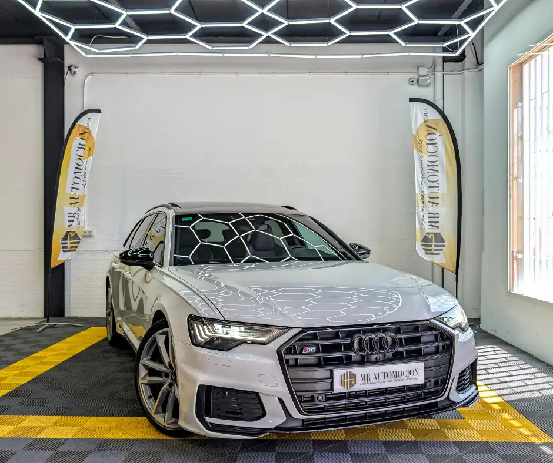

1 / 24Ponemos a la venta este espectacular e impecable Audi S6 Avant , el familiar de altas prestaciones por excelencia en una configuración de absoluto capricho. Una unidad fabricada originalmente en febrero de 2020 que registra 136.000 km reales y totalmente certificados en su marcador. Este vehículo representa el equilibrio definitivo para quienes necesitan la versatilidad de una carrocería Avant sin renunciar a una aceleración de infarto, respaldada por la legendaria seguridad de la tracción integral quattro.
Bajo su imponente carrocería esconde un motor diésel 3.0 V6 TDI de 350 CV , una caja automática tiptronic de 8 velocidades y al eficaz sistema de tracción total permanente quattro . Gracias a su avanzada tecnología de hibridación ligera (mild hybrid de 48V), este modelo ofrece un empuje devastador desde muy bajas revoluciones con unos consumos sorprendentemente contenidos para su potencia, beneficiándose además de las ventajas de la etiqueta ECO de la DGT .
Estética exterior S y presencia imponente Iluminación e inteligencia: Faros delanteros con tecnología full led de alta intensidad con firma lumínica dinámica adaptativa y lavafaros integrados. Detalles deportivos: Paragolpes específicos de la línea S con entradas de aire optimizadas, carcasas de los retrovisores exteriores en acabado de aluminio satinado y el emblemático sistema de escape con salidas dobles.
Equipa llantas de aleación ligera S de 21" gran formato calzadas sobre neumáticos deportivos Michelin Pilot Sport 5 Luminosidad y exclusividad: Impresionante sistema de doble techo panorámico de cristal , con la sección delantera practicable eléctricamente y zona acristalada trasera fija para bañar de luz todo el habitáculo, acompañado de barras de techo longitudinales en color negro y cristales traseros oscurecidos para una mayor privacidad.
Interior Asientos deportivos S de rombos: espectaculares asientos deportivos delanteros con el logotipo S grabado en el respaldo, tapizados en una exquisita combinación de cuero y Alcantara gris oscuro con costuras en contraste de diseño de rombos , completamente eléctricos y con calefacción integrada.
Sonido premium Bang & Olufsen: Equipado con el exclusivo sistema de audio envolvente de alta fidelidad firmado por Bang & Olufsen, que ofrece una nitidez y una experiencia acústica tridimensional incomparables en cada trayecto. Puesto de mando S-Line: Volante deportivo multifunción achatado en su parte inferior , revestido en cuero perforado con costuras de contraste y levas de cambio integradas, acompañado de pedalier deportivo en acero inoxidable y molduras interiores en aluminio cepillado.
Tecnología digital de tres pantallas: Equipado con el cuadro de mandos digital completo Audi virtual cockpit de alta resolución configurable, combinado con el vanguardista sistema de doble pantalla táctil central (MMI navegación plus con respuesta háptica, conectividad total para teléfonos inteligentes a través de interfaces de aplicaciones y una pantalla inferior exclusiva para la gestión de la climatización automática digital).
Seguridad avanzada y asistentes a la conducción Sistema de cámaras de entorno 3D: Tecnología de asistencia al estacionamiento con cámaras perimetrales de alta definición que generan una vista tridimensional del entorno en la pantalla central para maniobrar con absoluta precisión, asistido por sensores de aparcamiento delanteros y traseros.
Versatilidad de carga: El maletero cuenta con portón de apertura eléctrica y botón de desbloqueo mecánico para el sistema de enganche de remolque/asistencia de carga en el panel lateral. Equipado con los más modernos sistemas de protección perimetral, asistente activo de mantenimiento de carril, regulador de velocidad adaptativo con limitador de velocidad, asistente de frenada de emergencia en ciudad con detección de obstáculos y sistema de tracción y estabilidad avanzado.
Tu compra segura con MRAutomoción Disfruta de este familiar deportivo de ensueño con la total transparencia y la tranquilidad que te ofrece nuestro equipo profesional: ✅ Mantenimiento y revisión completa: Vehículo rigurosamente inspeccionado por nuestros técnicos antes de la entrega. ✅ Kilometraje certificado . ✅ Garantía completa de 1 año (12 meses) incluida. ✅ Transferencia incluida: Gestión documental y cambio de nombre listos en el precio final llave en mano, sin costes ocultos. ✅ Consúltanos nuestras ventajosas opciones de financiación flexible a tu medida con excelentes condiciones.
| Marca | Audi |
|---|---|
| Modelo | Audi S6 Avant 3.0 V6 TDI 350CV quattro 2020 |
| Año | Feb 2020 |
| Kilómetros | 136.000 km |
| Combustible | Híbrido |
| Cambio | Semi-Automático |
| Potencia | 350 CV |
| Garantía | 1 Año |
| IVA | NO DEDUCIBLE |
Quizá también te encaje